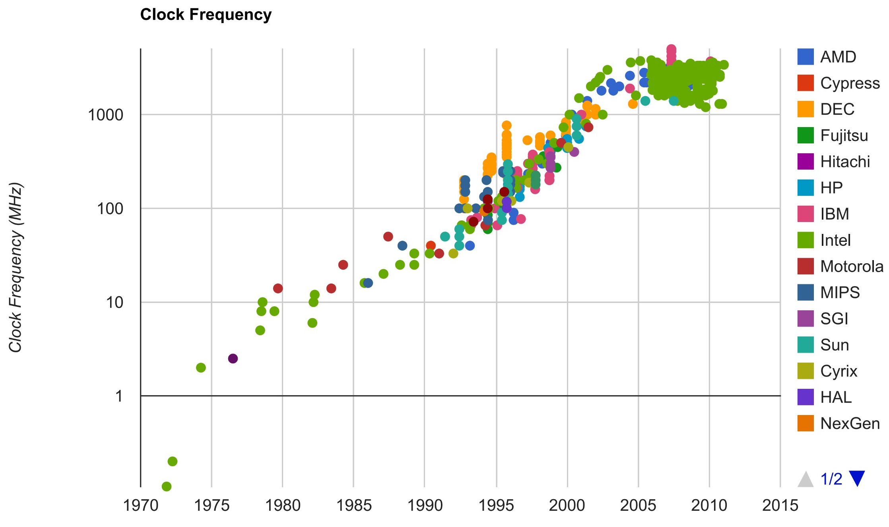
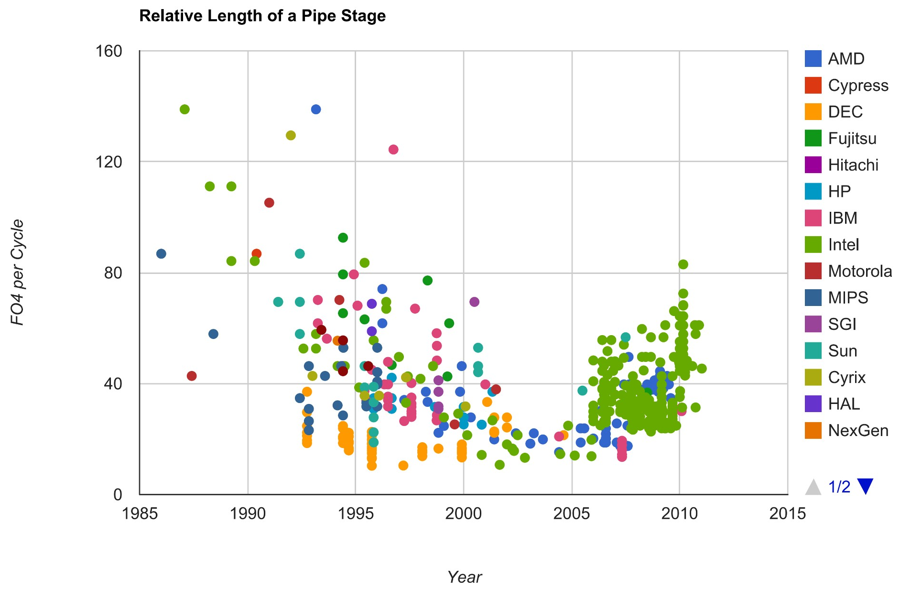
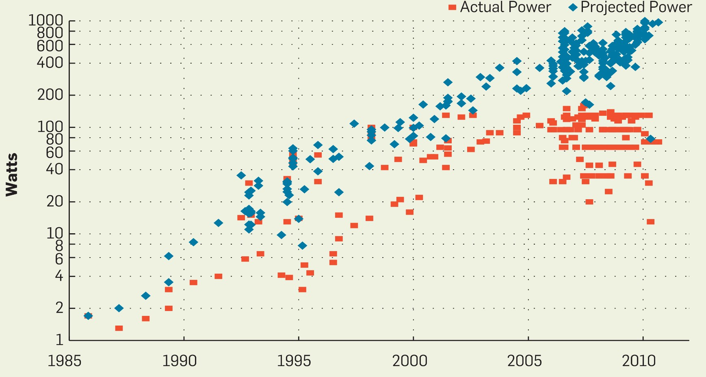

Perspectives — Why Multicore, the Power Wall, and Parallel Computers
Chapter Roadmap
Module 1.1The Switch to Multicore What a core/multicore is, and the low-hanging-fruit theory that explains the pivot from ILP to TLP.
Module 1.2The Power Wall Energy vs. power, dynamic + static power, Dennard scaling and why frequency stalled ~2005.
Module 1.3Parallel Computers What makes a machine "parallel," and Flynn's taxonomy: SISD / SIMD / MISD / MIMD.
The takeaway
Hardware went parallel because physics removed the free lunch — and that pushes the burden of performance onto software and architecture. That tension is the whole course.
Module 1.1
The Switch to Multicore
By the end you can…
Define core, multicore, and parallel architecture precisely
Explain the low-hanging-fruit theory of architectural progress
Contrast ILP and TLP, and say why we ran out of cheap ILP
Definitions
Parallel architecture
An architecture where CPUs are integrated tightly enough that they can cooperate to solve a single problem.
What is a CPU (a "core")? A processing element that can independently fetch and execute instructions from at least one instruction stream.
Contains: instruction-fetch unit, program counter, scheduler, functional units, register file…
Does it include the L1 cache? the L2 cache? Yes and no — depends on context
Course convention
A core is the logic that independently runs an instruction stream. We generally exclude caches from the definition.
What is a Multicore?
MulticoreA single chip (die) containing multiple CPUs / cores.
Terminology used in this course:
Processor = CPU = core
Processor chip = the chip that holds the cores
Most multicores are parallel architectures; parallel architectures often use multicores as the building block.
Multicore ⊂ Parallel architecture (usually)
Recent Multicores
From a handful to many dozens of cores, most x86 cores running 2 hardware threads (SMT-2), with a 3-level cache hierarchy: per-core private L1 (split I/D) and L2, plus a large shared L3 / last-level cache; an on-die mesh / ring / chiplet interconnect links cores, cache, and memory controllers.
Chip (year)
Cores / threads
Clock (boost)
Process
L1 / core
L2 / core
L3 (shared LLC)
AMD EPYC 9654 "Genoa" (2022)
96 / 192
3.7 GHz
TSMC 5 nm
64 KB (32 I + 32 D)
1 MB
384 MB (32 MB × 12 CCD)
AMD EPYC "Turin" Zen 5 (2024)
up to 192 / 384
~3.7 GHz
TSMC 3 nm (Zen 5c)
80 KB (32 I + 48 D)
1 MB
up to 384 MB
Intel Xeon "Emerald Rapids" (2023)
64 / 128
3.9 GHz
Intel 7 †
80 KB (32 I + 48 D)
2 MB
320 MB
Apple M3 Max (2023)
16 (12 P + 4 E)
~4.0 GHz
TSMC 3 nm
up to 192 KB
16 MB / cluster
48 MB SLC*
SMT width varies: x86 cores run 2 threads (SMT-2); IBM POWER up to 8; Apple & most ARM run 1 (no SMT). Process labels are commercial node names, not physical gate lengths. † “Intel 7” is Intel’s former 10 nm node (≈ TSMC 7 nm class), not a true 7 nm. *Apple uses large shared per-cluster L2 + a system-level cache (SLC) rather than a classic L3.
A Closer Look: AMD EPYC “Genoa” (Zen 4)
One CCD = 8 Zen 4 cores sharing a 32 MB L3.
12 CCD chiplets (blue), 8 cores each → up to 96 cores / 192 threads
Each CCD: 8 cores share a 32 MB L3 → 384 MB total
Per core: 64 KB L1 (32 I + 32 D) + 1 MB private L2
Central I/O die (amber): memory controllers + Infinity Fabric linking all CCDs
Chiplet design: CCDs on 5 nm, I/O die on 6 nm
The big question
Starting ~2001–2005, every chipmaker turned to the multicore approach.
Why then? Why not earlier or later?
Module 1.1 answers the "why now"; Module 1.2 gives the physics.
Feature Size Scaling
Process-node introduction years. Data: Wikipedia, “List of semiconductor scale examples” (ITRS / IRDS roadmaps). Recent “nm” node names are commercial labels, not physical gate lengths.
Moore's Law
Gordon Moore's 1965 observation that the number of transistors on a chip doubles roughly every ~2 years (originally yearly; revised to ~2 years in 1975) as feature sizes shrink. It's an empirical trend, not a physical law.
Result of scaling2,300 transistors (Intel 4004, 1971) → 2.3 billion transistors (2012).
64-bit, up to 3.5 GHz, 2.37B transistors, up to 20 MB L3 cache
graphics processor, TurboBoost
Pipelining → caches → OoO → SMT → multicore. Why exactly that order? Next slide.
Why That Order? The Low-Hanging-Fruit Theory
More transistors became available steadily. So "single core → multicore" feels inevitable…
But why did pipelining, branch prediction, superscalar, and caches all come before multicore?
The theory
A farmer picks the low-hanging fruit first — it takes the least effort — until they run out.
Multicore Is Not Low-Hanging
TLP — Thread-Level Parallelism
Split program into multiple threads
Coordinate with synchronization
Communicate data across threads
Cost: real parallel-programming effort 😓
ILP — Instruction-Level Parallelism
Hardware finds parallelism automatically
Programmer keeps the sequential mental model
Cost: little to none for the programmer 🙂
So why switch?
We switched from ILP to TLP only because we ran out of low-hanging ILP fruit. Multicore wasn't chosen for love — it was chosen out of necessity.
The ILP Fruits
Pipelining & issue
Pipelining (RISC; CISC with a RISC backend)
Superscalar (multiple issue / cycle)
Out-of-order execution
Memory hierarchy
Caches exploit spatial & temporal locality
Multiple cache levels (L1/L2/L3)
Next: three quick ILP techniques (pipelining, superscalar) and three flavors of parallelism we can expose instead.
ILP Technique: Pipelining
Overlap successive instructions in a 5-stage pipeline (IF · ID · EX · MEM · WB). One instruction finishes every cycle at steady state.
A (a load)
IF
ID
EX
MEM
WB
B
IF
ID
EX
MEM
WB
C
IF
ID
EX
MEM
WB
cycle →
1
2
3
4
5
6
7
Why it's "low-hanging"The programmer writes ordinary sequential code; the hardware overlaps it. Free performance — until latching overhead and deep-pipeline penalties bite (we'll see this limit shortly).
ILP Technique: Superscalar
SuperscalarA CPU that issues and executes multiple instructions per clock cycle — several functional units + multiple-issue dispatch — to extract ILP from a single instruction stream.
Verdict
More ILP now costs more power and complexity than it returns. The cheap fruit is gone — time to climb to TLP. But what physically forced the issue? → the Power Wall (in Module 1.2).
Module 1.1 — Review
1. What does Processor / CPU / Core mean in this course?
Logic that can independently fetch and execute an instruction stream. It excludes caches.
2. State the low-hanging-fruit theory and how it explains the rise of multicore.
Easy performance is taken first. ILP techniques were lower-hanging than multicore. Multicore needs TLP, and TLP needs parallel programming — so it came last, once ILP fruit ran out.
3. Using the theory, predict the future of multicore.
Other approaches (e.g. specialization / accelerators) take over once parallel programming on multicore delivers diminishing returns.
Click / press → to reveal each answer.
Module 1.2
The Power Wall
By the end you can…
Distinguish energy from power, and define EPI, EDP, ED²P
Decompose power into dynamic (CV²f) and static (leakage)
Explain why voltage stopped scaling and frequency stalled ~2005
Basics of Power & Energy
\(V\) voltage\(I\) current\(C\) capacitance\(f\) switching frequency (clock)
EnergyAbility to do work — unit joule.
1 J ≈ lift an apple to shoulder height
4 J ≈ heat a teaspoon of water by 1 °C
PowerRate of energy transfer — 1 watt = 1 J/s. \(P = V \cdot I\)
For a capacitor: \(E_{stored} = \tfrac{1}{2} C V^2\)
Charged/drained f times per second:
\( P_{dynamic} = 2 \cdot \tfrac12 C V^2 \cdot f = C V^2 f \)
This dynamic power term drives everything in this module.
Efficiency Metrics
IPS = instructions / secondFLOPS = floating-point operations / second
Power per device \(\times S^2\!\approx\!0.5\); but you pack \(1/S^2\!\approx\!2\times\) transistors per chip ⇒ \(0.5\times 2 = 1\), chip power constant for any S.
Named after R. H. Dennard et al., “Design of Ion-Implanted MOSFET’s with Very Small Physical Dimensions,” IEEE J. Solid-State Circuits, 1974 (a.k.a. classical / constant-field scaling).
New Rule: Leakage-Limited
Same S = 0.7, but supply voltage V can no longer scale down (constant-voltage era: lowering V needs a lower V_thd → leakage explodes).
Scaling per generation
Capacitance (C) scales by S = 0.7
Supply voltage (V) cannot scale (V_thd → leakage)
Frequency (f) scales by 1/S = 1.4
Number of transistors scales by 1/S² = 2×
Why power doubles
Now V is fixed:
\( \alpha(SC)(V)^2\tfrac{f}{S} = \alpha CV^2 f \)
Power per device \(\times 1\) (unchanged); but still \(1/S^2\!\approx\!2\times\) transistors per chip ⇒
\( 1\times 2 = 2 \Rightarrow\) chip power doubles! 🔥
Constant-Field vs Constant-Voltage Scaling
The whole difference between the two rules is one question: when a transistor shrinks, does its voltage shrink too? It comes down to the electric field inside the device.
\( E = \dfrac{V}{\text{length}} \) : shrink length by \(S\) and the field rises, unless \(V\) shrinks by \(S\) as well.
Constant-field (Dennard's ideal)
Scale dimensions and V together by S = 0.7, so \(E\) stays constant. Per-device power falls ×S² while you pack ×1/S² transistors, so power density stays constant. Gentle on reliability (no added field stress).
Constant-voltage
Scale dimensions but hold V fixed, so \(E\) rises (×1/S). Per-device power stops dropping, so power density climbs. Field stress brings hot carriers, oxide breakdown, and more leakage.
Why V stopped scaling (~2005)
To lower V you must lower the threshold \(V_{thd}\), but the subthreshold slope (~60 mV/decade) means a lower \(V_{thd}\) makes leakage current \(I_{off}\) explode exponentially. So V froze, and the industry slid from constant-field into constant-voltage: the power wall.
The Power Wall
Power WallDennard scaling ended (~2005). More transistors no longer come "for free" in power — so we can't just crank frequency anymore.
The fix: stop raising frequency, spend the extra transistors on more cores — and push performance onto software & architecture.
Implications for Architecture Design
FrequencyCranking the clock has hit a dead end.
ResourcesArea is abundant, power is scarce — the inversion.
Per-core budgetDeclining power budget per core.
New objective function
Architectures must improve energy efficiency. The dominant metric becomes performance / watt (ops / joule) — and the answer is many simpler, cooler cores: multicore.
Evidence: Frequency Went Flat (~2001–2005)

source: CPU DB (real per-chip data) · red = trend
For decades clock frequency climbed every generation. Then, around 2001–2005, it flattened — and has stayed on a plateau ever since.
The symptomThe first visible sign of the power wall: clock frequency stopped climbing.
Evidence: Pipelining Reversed

Logic per pipeline stage (FO4 per cycle) fell through the 1990s as designers super-pipelined to chase frequency.
After ~2005The trend reversed — stages grew longer again. Deep pipelines cost too much power for too little gain.
source: CPU DB · FO4 = fan-out-of-4 gate delay (a process-independent unit of logic)
Evidence: Power Hit the Ceiling

Projected power kept rising exponentially; actual shipped power flattened around 2004–2005.
The ceilingDesigners capped power at the packaging / cooling limit instead of following the projection — the power wall, in data.
source: CPU DB
Three Signatures of the Power Wall
All three appear in the same 2001–2005 window — the same window as the multicore transition:
1 · FrequencyClock frequency stops climbing.
2 · PipeliningLogic per pipeline stage stops shrinking (pipelining reverses).
3 · Power mgmtPower-saving techniques (clock gating, DVFS, power gating) become essential.
Not a Coincidence
Same event, two anglesThe power wall and the multicore pivot are the same event seen from two angles.
Once frequency could no longer rise, the only way to keep using the extra transistors Moore's law still delivered was to add more cores — pushing the burden of performance onto software & architecture.
In-Class Exercises — Q1
Q1If Moore's law slows so gate length scales at S = 0.8 (instead of 0.7), find the dynamic power under constant-field vs. constant-voltage scaling.
Q2With constant-voltage scaling, we want to keep dynamic power constant by keeping frequency constant and reducing die area. How much should we reduce die area?
Answer (S = 0.7, V & f fixed)
Per device: only C scales — \(C\to SC=0.7C\). So one transistor's power \(\alpha CV^2f \to 0.7\times\).
Same die area: transistors/chip \(\times 1/S^2 = 2\times\). Chip power \(= 2\times0.7 = \mathbf{1.4\times}\) (too high).
Shrink area by factor \(a\) (transistors ∝ area): power \(=(2a)(0.7)=1.4a\). Set \(=1\):
"…solve a large problem fast"
General- vs. special-purpose: any machine solves some problems well. These axes — PEs, communication, cooperation — recur for the rest of the course.
Medium parallelEngineering apps: finite-elements, VLSI-CAD.
Not parallelCompilers, editors — limited parallelism.
Modern realityAI/ML training & inference, data analytics, and graphics are now the dominant embarrassingly-parallel workloads driving GPUs and accelerators.
Why Parallel — and Why Not Until Multicore?
Why parallel?
Absolute performance: protein folding = years on one CPU, days on a parallel machine; weather forecasts must be timely
Cost-/power-adjusted performance, esp. small 2–8 chip systems — the smallest of which is a multicore
Why niche before ~2005?
Low-hanging ILP made single-thread perf scale cheaply
Parallel systems were costly & slow to design
ILP gains eclipsed parallel gains within a few years
Illustration: ILP Catches Up
100-processor system, perfect speedup, vs. one improving single processor:
Yr 1: 100× → Yr 2: 62.5× → Yr 3: 39× → … → Yr 10: 0.9×
Even worse
Multiprocessors take longer to build
Low volume → high prices
High prices delay adoption
Perfect speedup is unattainable
Flynn's Taxonomy [1972]
Classify machines by two independent dimensions:
Instruction streamInstructions fetched from a single program counter.
Data streamData items accessed by a single instruction.
Single Data
Multiple Data
Single Instruction
SISD — classic uniprocessor
SIMD — vector, GPU
Multiple Instruction
MISD — systolic (rare)
MIMD — multicore, clusters
What's an "Instruction Stream"?
One PC points to one instruction; executed logically one at a time; PC advances.
C source
void MyFunction() {
int a, b, c;
a = 10; b = 5; c = 2;
}
ComebackThe systolic idea is alive in modern AI accelerators (matrix / tensor engines).
MIMD
MIMD = independent PEs, each with its own instruction and data stream. Most CPU parallel computers today
Solihin's Fig 1.7 names four sub-classes by what is shared:
Shared cache — cores on one die share a cache level
UMA (uniform memory access) — all PEs share main memory at the same latency (classic SMP)
NUMA (non-uniform memory access) — memory is distributed; local access is faster than remote
Distributed system — nothing shared; PEs cooperate by message passing (clusters)
UMA vs NUMABoth share one address space — but UMA latency is flat, while NUMA latency depends on where the data lives. (Revisited in Ch.10, DSM.)
The Taxonomy Today
SISDLives inside a single core — handles ILP.
SIMDThrives in GPUs & TPUs — data parallelism for HPC, blockchain, AI.
MIMDMulticore CPUs — TLP & complex parallelism.
MISDStill a niche — but systolic arrays power AI matrix engines.
Real systems combine all of them: a cloud/HPC server is SISD cores, SIMD GPUs, in a MIMD fabric.
Beyond Flynn: Dataflow
What is dataflow?
No program counter, no central instruction stream. An operation fires the moment its input operands (tokens) are ready — execution is data-driven, not control-driven.
The program is a graph of operations; data flows along the edges
Systolic arrays and modern AI matrix / tensor engines are spatial dataflow — the program is laid out across a grid of PEs
Why it's not in Flynn
Flynn (1966) classifies control-flow machines by counting instruction streams × data streams. Dataflow breaks that frame:
No global instruction stream to count
The "program" lives in space & timing (the PE grid + interconnect), not a control sequence
Data-driven & spatial → orthogonal to Flynn's two axes
So
Dataflow isn't misclassified by Flynn — it falls outside it. That's why newer terms like SPMD, SIMT (GPUs), and spatial / dataflow get bolted on beyond the original four classes.
The TOP500 & the Race to Exascale
top500.org ranks the fastest machines (by Linpack). It changes fast — Earth Simulator went #1 (2004) → #10 in two years.
Era
#1 system
Peak
2004
Earth Simulator
~40 TFLOP/s
2013
Tianhe-2 (China)
~33.8 PFLOP/s
2022
Frontier (ORNL)
first exascale
2024→
El Capitan (LLNL)
~1.7 EFLOP/s
Engineering marvelsThese machines consume as much power as a small city (tens of MW). Cooling, plumbing & the building are co-designed with the computer.
Tianhe-2: 3.12M cores, 16K nodes, ~18 MW
El Capitan / Frontier: AMD CPU+GPU (APU) nodes — CPU/GPU combo is now standard at the top
The patternThe top of the list is now heterogeneous: MIMD CPUs orchestrating massive SIMD GPU arrays.
Module 1.3 — Review
1. Name the four categories of computers in Flynn's taxonomy.
SISD, SIMD, MISD, MIMD.
2. Classify each system:
A single core in a multicore
GPU / Xeon-Phi-style co-processor
A multicore chip in a server
A server farm of cheap PCs
single core → SISD GPU/co-processor → SIMD (or SIMD/MIMD) multicore chip → MIMD server farm → distributed system (MIMD, no shared memory).
Chapter 1 — Big Picture
1.1 SwitchWe ran out of cheap ILP fruit → had to climb to TLP / multicore.
1.2 Power wallDennard scaling ended (~2005): V stopped scaling, frequency stalled, power became the budget.
One sentencePhysics ended the free lunch, so performance is now the responsibility of parallel software and energy-aware architecture. The rest of CSC/ECE 506 is about how to meet that responsibility.
Next up → Chapter 2: the parallel programming model & how we actually express TLP.
References
Course textbook
Yan Solihin, Fundamentals of Parallel Multicore Architecture, Chapman & Hall/CRC, 2015.